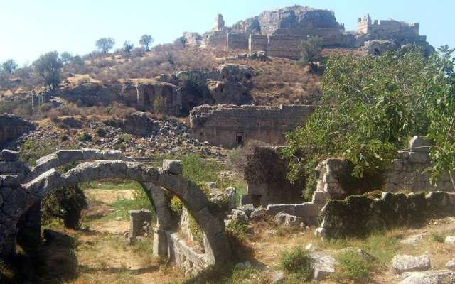
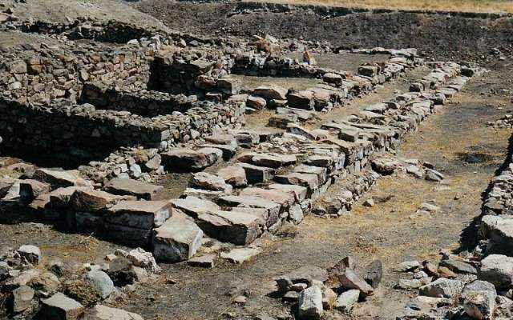
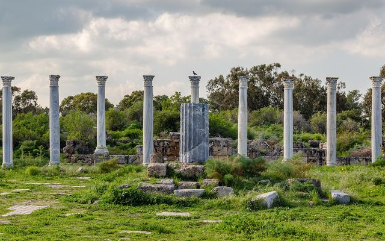
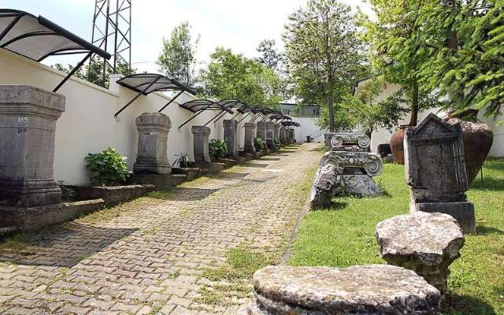
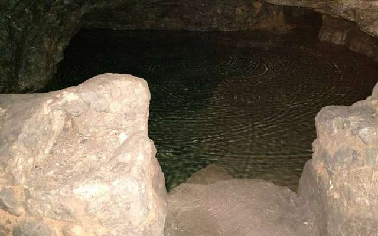
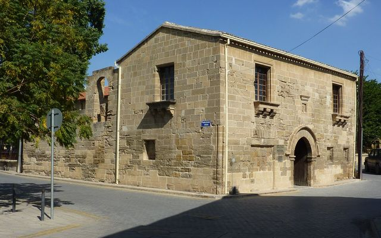

प्रागैतिहासिक और नवपाषाण काल
ई.पू. 12.000 – 3000 · 8 स्थान
 अर्सलानतेपे पुरातात्विक स्थलमालात्या · ताम्रपाषाण काल / कांस्य युग / उत्तर-हित्ती
अर्सलानतेपे पुरातात्विक स्थलमालात्या · ताम्रपाषाण काल / कांस्य युग / उत्तर-हित्ती गोबेकलीतेपेशानलीउर्फ़ा · नवपाषाण काल
गोबेकलीतेपेशानलीउर्फ़ा · नवपाषाण काल चातलह्यूयुक पुरातात्विक स्थलकोन्या · नवपाषाण काल
चातलह्यूयुक पुरातात्विक स्थलकोन्या · नवपाषाण काल आशिकली ह्यूयुकअक्साराय · नवपाषाण काल
आशिकली ह्यूयुकअक्साराय · नवपाषाण काल काराहानतेपे पुरातात्विक स्थलशानलीउर्फ़ा · नवपाषाण काल
काराहानतेपे पुरातात्विक स्थलशानलीउर्फ़ा · नवपाषाण काल कराइन गुफाअंताल्या · पुरापाषाण कालकिर्कलारेली संग्रहालयकिर्कलारेली · प्रागैतिहासिक / थ्रेसियाईशानलीउर्फ़ा पुरातत्व संग्रहालयशानलीउर्फ़ा · नवपाषाण काल – उस्मानी
कराइन गुफाअंताल्या · पुरापाषाण कालकिर्कलारेली संग्रहालयकिर्कलारेली · प्रागैतिहासिक / थ्रेसियाईशानलीउर्फ़ा पुरातत्व संग्रहालयशानलीउर्फ़ा · नवपाषाण काल – उस्मानीकांस्य युग और हित्ती
ई.पू. 3000 – 1200 · 16 स्थान
अर्सलानतेपे पुरातात्विक स्थलमालात्या · ताम्रपाषाण काल / कांस्य युग / उत्तर-हित्ती हत्तूसाचोरुम · हित्ती
हत्तूसाचोरुम · हित्ती त्रॉयचानाक्काले · कांस्य युग / रोमन
त्रॉयचानाक्काले · कांस्य युग / रोमन अलाजाह्यूयुक संग्रहालय और पुरातात्विक स्थलचोरुम · कांस्य युग / हित्ती
अलाजाह्यूयुक संग्रहालय और पुरातात्विक स्थलचोरुम · कांस्य युग / हित्ती एनकोमी (अलासिया) पुरातात्विक स्थलग़ाज़ीमागुसा (फ़ामागुस्ता) · कांस्य युग
एनकोमी (अलासिया) पुरातात्विक स्थलग़ाज़ीमागुसा (फ़ामागुस्ता) · कांस्य युग
त्लोस पुरातात्विक स्थल (फ़ेतिये)मुग़ला · कांस्य युग – उस्मानी हर्रान पुरातात्विक स्थलशानलीउर्फ़ा · कांस्य युग – मध्यकाल
हर्रान पुरातात्विक स्थलशानलीउर्फ़ा · कांस्य युग – मध्यकाल इआसोस पुरातात्विक स्थलमुग़ला · कांस्य युग – बीजान्टिन
इआसोस पुरातात्विक स्थलमुग़ला · कांस्य युग – बीजान्टिन कामान कालेह्यूयुक पुरातत्व संग्रहालयकिरशेहिर · कांस्य युग / लौह युग
कामान कालेह्यूयुक पुरातत्व संग्रहालयकिरशेहिर · कांस्य युग / लौह युग कराटेपे-अस्लानताश संग्रहालय और पुरातात्विक स्थलओस्मानिये · उत्तर-हित्ती (8वीं सदी ई.पू.)
कराटेपे-अस्लानताश संग्रहालय और पुरातात्विक स्थलओस्मानिये · उत्तर-हित्ती (8वीं सदी ई.पू.)
क्यूल्तेपे पुरातात्विक स्थलकायसेरी · कांस्य युग
सालामिस पुरातात्विक स्थलग़ाज़ीमागुसा (फ़ामागुस्ता) · कांस्य युग / रोमन / बीजान्टिन येसेमेक पुरातात्विक स्थलगाज़ियांतेप · उत्तर-हित्ती
येसेमेक पुरातात्विक स्थलगाज़ियांतेप · उत्तर-हित्ती बोद्रुम जलगत पुरातत्व संग्रहालयमुग़ला · कांस्य युग – उस्मानी
बोद्रुम जलगत पुरातत्व संग्रहालयमुग़ला · कांस्य युग – उस्मानी बोआज़कोय संग्रहालयचोरुम · हित्तीशानलीउर्फ़ा पुरातत्व संग्रहालयशानलीउर्फ़ा · नवपाषाण काल – उस्मानी
बोआज़कोय संग्रहालयचोरुम · हित्तीशानलीउर्फ़ा पुरातत्व संग्रहालयशानलीउर्फ़ा · नवपाषाण काल – उस्मानीलौह युग के राज्य
ई.पू. 1200 – 550 · 38 स्थान
अर्सलानतेपे पुरातात्विक स्थलमालात्या · ताम्रपाषाण काल / कांस्य युग / उत्तर-हित्ती ज़ैंथोस पुरातात्विक स्थलअंताल्या · लिकियाई
ज़ैंथोस पुरातात्विक स्थलअंताल्या · लिकियाई गोर्डियन संग्रहालयअंकारा · फ़्रीजियाई
गोर्डियन संग्रहालयअंकारा · फ़्रीजियाई अमिंतास चट्टानी क़ब्रमुग़ला · लिकियाई (4वीं सदी ई.पू.)
अमिंतास चट्टानी क़ब्रमुग़ला · लिकियाई (4वीं सदी ई.पू.) आरीकांडा पुरातात्विक स्थलअंताल्या · लिकियाई / रोमन
आरीकांडा पुरातात्विक स्थलअंताल्या · लिकियाई / रोमन फ़ेतिये लेटून पुरातात्विक स्थलमुग़ला · लिकियाई / रोमन
फ़ेतिये लेटून पुरातात्विक स्थलमुग़ला · लिकियाई / रोमन फ़ेतिये पिनारा पुरातात्विक स्थलमुग़ला · लिकियाई / रोमनत्लोस पुरातात्विक स्थल (फ़ेतिये)मुग़ला · कांस्य युग – उस्मानी
फ़ेतिये पिनारा पुरातात्विक स्थलमुग़ला · लिकियाई / रोमनत्लोस पुरातात्विक स्थल (फ़ेतिये)मुग़ला · कांस्य युग – उस्मानी हरपुत क़िलाएलाज़िग · उरार्तु / मध्यकालहर्रान पुरातात्विक स्थलशानलीउर्फ़ा · कांस्य युग – मध्यकालइआसोस पुरातात्विक स्थलमुग़ला · कांस्य युग – बीजान्टिनकामान कालेह्यूयुक पुरातत्व संग्रहालयकिरशेहिर · कांस्य युग / लौह युगकराटेपे-अस्लानताश संग्रहालय और पुरातात्विक स्थलओस्मानिये · उत्तर-हित्ती (8वीं सदी ई.पू.)
हरपुत क़िलाएलाज़िग · उरार्तु / मध्यकालहर्रान पुरातात्विक स्थलशानलीउर्फ़ा · कांस्य युग – मध्यकालइआसोस पुरातात्विक स्थलमुग़ला · कांस्य युग – बीजान्टिनकामान कालेह्यूयुक पुरातत्व संग्रहालयकिरशेहिर · कांस्य युग / लौह युगकराटेपे-अस्लानताश संग्रहालय और पुरातात्विक स्थलओस्मानिये · उत्तर-हित्ती (8वीं सदी ई.पू.) कौनोस पुरातात्विक स्थलमुग़ला · कारियाई / हेलेनिस्टिक / रोमनशाही मकबरे संग्रहालय और पुरातात्विक स्थलग़ाज़ीमागुसा (फ़ामागुस्ता) · लौह युग (8–7वीं सदी ई.पू.)
कौनोस पुरातात्विक स्थलमुग़ला · कारियाई / हेलेनिस्टिक / रोमनशाही मकबरे संग्रहालय और पुरातात्विक स्थलग़ाज़ीमागुसा (फ़ामागुस्ता) · लौह युग (8–7वीं सदी ई.पू.) लाब्राउंडा पुरातात्विक स्थलमुग़ला · कारियाई / हेलेनिस्टिक
लाब्राउंडा पुरातात्विक स्थलमुग़ला · कारियाई / हेलेनिस्टिक लिकियाई सभ्यता संग्रहालय और अंद्रियाके पुरातात्विक स्थलअंताल्या · लिकियाई / रोमन
लिकियाई सभ्यता संग्रहालय और अंद्रियाके पुरातात्विक स्थलअंताल्या · लिकियाई / रोमन लिमिरा पुरातात्विक स्थलअंताल्या · लिकियाई / रोमन
लिमिरा पुरातात्विक स्थलअंताल्या · लिकियाई / रोमन मिडास यज़िलिकाया पुरातात्विक स्थलएस्कीशेहिर · फ़्रीजियाई
मिडास यज़िलिकाया पुरातात्विक स्थलएस्कीशेहिर · फ़्रीजियाई उज़ूनयुवा स्मारक-मकबरा और संग्रहालय परिसर (मिलास)मुग़ला · कारियाई (4वीं सदी ई.पू.)
उज़ूनयुवा स्मारक-मकबरा और संग्रहालय परिसर (मिलास)मुग़ला · कारियाई (4वीं सदी ई.पू.) मायरा पुरातात्विक स्थलअंताल्या · लिकियाई / रोमन
मायरा पुरातात्विक स्थलअंताल्या · लिकियाई / रोमन ओलिंपोस पुरातात्विक स्थलअंताल्या · लिकियाई / रोमन
ओलिंपोस पुरातात्विक स्थलअंताल्या · लिकियाई / रोमन पातारा पुरातात्विक स्थलअंताल्या · लिकियाई / रोमन
पातारा पुरातात्विक स्थलअंताल्या · लिकियाई / रोमन पेसिनस पुरातात्विक स्थलएस्कीशेहिर · फ़्रीजियाई / हेलेनिस्टिक / रोमन
पेसिनस पुरातात्विक स्थलएस्कीशेहिर · फ़्रीजियाई / हेलेनिस्टिक / रोमन फ़ासेलिस पुरातात्विक स्थलअंताल्या · लिकियाई / रोमन
फ़ासेलिस पुरातात्विक स्थलअंताल्या · लिकियाई / रोमन सार्डिस पुरातात्विक स्थलमानीसा · लिडियाई / रोमन
सार्डिस पुरातात्विक स्थलमानीसा · लिडियाई / रोमन सिमेना पुरातात्विक स्थलअंताल्या · लिकियाई / बीजान्टिन
सिमेना पुरातात्विक स्थलअंताल्या · लिकियाई / बीजान्टिन वान किलावान · उरार्तु – उस्मानीयेसेमेक पुरातात्विक स्थलगाज़ियांतेप · उत्तर-हित्ती
वान किलावान · उरार्तु – उस्मानीयेसेमेक पुरातात्विक स्थलगाज़ियांतेप · उत्तर-हित्ती चावुशतेपे किलावान · उरार्तु (8–7वीं सदी ई.पू.)बोद्रुम जलगत पुरातत्व संग्रहालयमुग़ला · कांस्य युग – उस्मानी
चावुशतेपे किलावान · उरार्तु (8–7वीं सदी ई.पू.)बोद्रुम जलगत पुरातत्व संग्रहालयमुग़ला · कांस्य युग – उस्मानी एर्ज़िंजान संग्रहालयएर्ज़िंजान · उरार्तु / बहु-कालीनफ़ेतिये संग्रहालयमुग़ला · लिकियाई / रोमनकिर्कलारेली संग्रहालयकिर्कलारेली · प्रागैतिहासिक / थ्रेसियाई
एर्ज़िंजान संग्रहालयएर्ज़िंजान · उरार्तु / बहु-कालीनफ़ेतिये संग्रहालयमुग़ला · लिकियाई / रोमनकिर्कलारेली संग्रहालयकिर्कलारेली · प्रागैतिहासिक / थ्रेसियाई बोद्रुम मौसोलियम स्मारक संग्रहालयमुग़ला · कारियाई (4वीं सदी ई.पू.)उशाक संग्रहालयउशाक · लिडियाई / बहु-कालीन
बोद्रुम मौसोलियम स्मारक संग्रहालयमुग़ला · कारियाई (4वीं सदी ई.पू.)उशाक संग्रहालयउशाक · लिडियाई / बहु-कालीन वान संग्रहालयवान · उरार्तु / बहु-कालीनशानलीउर्फ़ा पुरातत्व संग्रहालयशानलीउर्फ़ा · नवपाषाण काल – उस्मानी
वान संग्रहालयवान · उरार्तु / बहु-कालीनशानलीउर्फ़ा पुरातत्व संग्रहालयशानलीउर्फ़ा · नवपाषाण काल – उस्मानीशास्त्रीय और हेलेनिस्टिक काल
ई.पू. 550 – 30 · 61 स्थान
 अफ़्रोदिसियास संग्रहालय और पुरातात्विक स्थलआयदिन · हेलेनिस्टिक / रोमन
अफ़्रोदिसियास संग्रहालय और पुरातात्विक स्थलआयदिन · हेलेनिस्टिक / रोमन पर्गामम अक्रोपोलिसइज़मिर · हेलेनिस्टिक / रोमन
पर्गामम अक्रोपोलिसइज़मिर · हेलेनिस्टिक / रोमन पर्गामम एस्क्लेपियन पुरातात्विक स्थलइज़मिर · हेलेनिस्टिक / रोमन
पर्गामम एस्क्लेपियन पुरातात्विक स्थलइज़मिर · हेलेनिस्टिक / रोमन इफ़िसुसइज़मिर · हेलेनिस्टिक / रोमन
इफ़िसुसइज़मिर · हेलेनिस्टिक / रोमन हिएरापोलिस (पामुक्काले) पुरातात्विक स्थलदेनिज़्ली · हेलेनिस्टिक / रोमन
हिएरापोलिस (पामुक्काले) पुरातात्विक स्थलदेनिज़्ली · हेलेनिस्टिक / रोमन नेमरुत पर्वतआदियामान · हेलेनिस्टिक (कोमाजीन)
नेमरुत पर्वतआदियामान · हेलेनिस्टिक (कोमाजीन) स्मिर्ना अगोरा पुरातात्विक स्थलइज़मिर · हेलेनिस्टिक / रोमनआइगाई पुरातात्विक स्थलमानीसा · हेलेनिस्टिक / रोमन
स्मिर्ना अगोरा पुरातात्विक स्थलइज़मिर · हेलेनिस्टिक / रोमनआइगाई पुरातात्विक स्थलमानीसा · हेलेनिस्टिक / रोमन अलाबांडा पुरातात्विक स्थलआयदिन · हेलेनिस्टिक / रोमन
अलाबांडा पुरातात्विक स्थलआयदिन · हेलेनिस्टिक / रोमन आलाशेहिर (फ़िलाडेल्फ़िया) पुरातात्विक स्थलमानीसा · हेलेनिस्टिक / बीजान्टिन
आलाशेहिर (फ़िलाडेल्फ़िया) पुरातात्विक स्थलमानीसा · हेलेनिस्टिक / बीजान्टिन अलेक्ज़ान्ड्रिया त्रोआस पुरातात्विक स्थलचानाक्काले · हेलेनिस्टिक / रोमन
अलेक्ज़ान्ड्रिया त्रोआस पुरातात्विक स्थलचानाक्काले · हेलेनिस्टिक / रोमन अलिंडा पुरातात्विक स्थलआयदिन · हेलेनिस्टिक / रोमन
अलिंडा पुरातात्विक स्थलआयदिन · हेलेनिस्टिक / रोमन स्येद्रा प्राचीन नगरअंताल्या · हेलेनिस्टिक / रोमन
स्येद्रा प्राचीन नगरअंताल्या · हेलेनिस्टिक / रोमन पिसिडियाई एंटिओक पुरातात्विक स्थलइस्पार्ता · हेलेनिस्टिक / रोमन
पिसिडियाई एंटिओक पुरातात्विक स्थलइस्पार्ता · हेलेनिस्टिक / रोमन अपोलो स्मिंथियॉन पुरातात्विक स्थलचानाक्काले · हेलेनिस्टिक
अपोलो स्मिंथियॉन पुरातात्विक स्थलचानाक्काले · हेलेनिस्टिक आर्सामेइया पुरातात्विक स्थलआदियामान · हेलेनिस्टिक (कोमाजीन)
आर्सामेइया पुरातात्विक स्थलआदियामान · हेलेनिस्टिक (कोमाजीन) आसोस पुरातात्विक स्थलचानाक्काले · आर्केइक काल / हेलेनिस्टिक
आसोस पुरातात्विक स्थलचानाक्काले · आर्केइक काल / हेलेनिस्टिक ब्लाउंडोस पुरातात्विक स्थलउशाक · हेलेनिस्टिक / रोमन
ब्लाउंडोस पुरातात्विक स्थलउशाक · हेलेनिस्टिक / रोमन बोद्रुम प्राचीन रंगमंचमुग़ला · हेलेनिस्टिक / रोमन
बोद्रुम प्राचीन रंगमंचमुग़ला · हेलेनिस्टिक / रोमन त्रिपोलिस पुरातात्विक स्थलदेनिज़्ली · हेलेनिस्टिक / रोमन
त्रिपोलिस पुरातात्विक स्थलदेनिज़्ली · हेलेनिस्टिक / रोमन दीदिम अपोलो मंदिरआयदिन · हेलेनिस्टिक / रोमनत्लोस पुरातात्विक स्थल (फ़ेतिये)मुग़ला · कांस्य युग – उस्मानीफ़िल्योस (तियोस) पुरातात्विक स्थलज़ोंगुलदाक · हेलेनिस्टिक – बीजान्टिनहर्रान पुरातात्विक स्थलशानलीउर्फ़ा · कांस्य युग – मध्यकालइआसोस पुरातात्विक स्थलमुग़ला · कांस्य युग – बीजान्टिन
दीदिम अपोलो मंदिरआयदिन · हेलेनिस्टिक / रोमनत्लोस पुरातात्विक स्थल (फ़ेतिये)मुग़ला · कांस्य युग – उस्मानीफ़िल्योस (तियोस) पुरातात्विक स्थलज़ोंगुलदाक · हेलेनिस्टिक – बीजान्टिनहर्रान पुरातात्विक स्थलशानलीउर्फ़ा · कांस्य युग – मध्यकालइआसोस पुरातात्विक स्थलमुग़ला · कांस्य युग – बीजान्टिन काहता येनीकाले क़िलाआदियामान · कोमाजीन / मध्यकाल
काहता येनीकाले क़िलाआदियामान · कोमाजीन / मध्यकाल कानलीदिवाने पुरातात्विक स्थलमेर्सिन · हेलेनिस्टिक / रोमन / बीजान्टिन
कानलीदिवाने पुरातात्विक स्थलमेर्सिन · हेलेनिस्टिक / रोमन / बीजान्टिन कास्ताबाला पुरातात्विक स्थलओस्मानिये · हेलेनिस्टिक / रोमन / मध्यकालकौनोस पुरातात्विक स्थलमुग़ला · कारियाई / हेलेनिस्टिक / रोमन
कास्ताबाला पुरातात्विक स्थलओस्मानिये · हेलेनिस्टिक / रोमन / मध्यकालकौनोस पुरातात्विक स्थलमुग़ला · कारियाई / हेलेनिस्टिक / रोमन क्लारोस पुरातात्विक स्थलइज़मिर · आर्केइक काल / रोमनक्लाज़ोमेनाई पुरातात्विक स्थलइज़मिर · आर्केइक काललाब्राउंडा पुरातात्विक स्थलमुग़ला · कारियाई / हेलेनिस्टिक
क्लारोस पुरातात्विक स्थलइज़मिर · आर्केइक काल / रोमनक्लाज़ोमेनाई पुरातात्विक स्थलइज़मिर · आर्केइक काललाब्राउंडा पुरातात्विक स्थलमुग़ला · कारियाई / हेलेनिस्टिक लागिना पुरातात्विक स्थलमुग़ला · हेलेनिस्टिक / रोमन
लागिना पुरातात्विक स्थलमुग़ला · हेलेनिस्टिक / रोमन लाओडिकेया पुरातात्विक स्थलदेनिज़्ली · हेलेनिस्टिक / रोमन
लाओडिकेया पुरातात्विक स्थलदेनिज़्ली · हेलेनिस्टिक / रोमन मैग्नीसिया पुरातात्विक स्थलआयदिन · हेलेनिस्टिक / रोमन
मैग्नीसिया पुरातात्विक स्थलआयदिन · हेलेनिस्टिक / रोमन मानीसा आकहिसार संग्रहालय और तेपे क़ब्रिस्तानमानीसा · हेलेनिस्टिक / रोमन
मानीसा आकहिसार संग्रहालय और तेपे क़ब्रिस्तानमानीसा · हेलेनिस्टिक / रोमन मेट्रोपोलिस पुरातात्विक स्थलइज़मिर · हेलेनिस्टिक / रोमन
मेट्रोपोलिस पुरातात्विक स्थलइज़मिर · हेलेनिस्टिक / रोमन मिलास यूरोमोस पुरातात्विक स्थलमुग़ला · हेलेनिस्टिक / रोमन
मिलास यूरोमोस पुरातात्विक स्थलमुग़ला · हेलेनिस्टिक / रोमन मिलेटस पुरातात्विक स्थलआयदिन · आर्केइक काल / रोमन
मिलेटस पुरातात्विक स्थलआयदिन · आर्केइक काल / रोमन क्नीडोस पुरातात्विक स्थलमुग़ला · शास्त्रीय काल / हेलेनिस्टिक
क्नीडोस पुरातात्विक स्थलमुग़ला · शास्त्रीय काल / हेलेनिस्टिक निसा पुरातात्विक स्थल (सुल्तानहिसार)आयदिन · हेलेनिस्टिक / रोमन
निसा पुरातात्विक स्थल (सुल्तानहिसार)आयदिन · हेलेनिस्टिक / रोमन पेर्गे पुरातात्विक स्थलअंताल्या · हेलेनिस्टिक / रोमन
पेर्गे पुरातात्विक स्थलअंताल्या · हेलेनिस्टिक / रोमन पेर्रे पुरातात्विक स्थलआदियामान · कोमाजीन / रोमनपेसिनस पुरातात्विक स्थलएस्कीशेहिर · फ़्रीजियाई / हेलेनिस्टिक / रोमन
पेर्रे पुरातात्विक स्थलआदियामान · कोमाजीन / रोमनपेसिनस पुरातात्विक स्थलएस्कीशेहिर · फ़्रीजियाई / हेलेनिस्टिक / रोमन प्रीएने पुरातात्विक स्थलआयदिन · हेलेनिस्टिक
प्रीएने पुरातात्विक स्थलआयदिन · हेलेनिस्टिक सागालासोस पुरातात्विक स्थलबुर्दुर · हेलेनिस्टिक / रोमन
सागालासोस पुरातात्विक स्थलबुर्दुर · हेलेनिस्टिक / रोमन सेदिर द्वीप (केद्रेआई)मुग़ला · हेलेनिस्टिक / रोमन
सेदिर द्वीप (केद्रेआई)मुग़ला · हेलेनिस्टिक / रोमन साइड पुरातात्विक स्थलअंताल्या · हेलेनिस्टिक / रोमनसोफ़राज़ स्मारक मक़बराआदियामान · हेलेनिस्टिक / रोमन
साइड पुरातात्विक स्थलअंताल्या · हेलेनिस्टिक / रोमनसोफ़राज़ स्मारक मक़बराआदियामान · हेलेनिस्टिक / रोमन सोली पुरातात्विक स्थललेफ़्के (लेफ़्का) · आर्केइक काल / रोमन
सोली पुरातात्विक स्थललेफ़्के (लेफ़्का) · आर्केइक काल / रोमन स्ट्रातोनिकेइया पुरातात्विक स्थलमुग़ला · हेलेनिस्टिक – उस्मानी
स्ट्रातोनिकेइया पुरातात्विक स्थलमुग़ला · हेलेनिस्टिक – उस्मानी तेओस पुरातात्विक स्थलइज़मिर · आर्केइक काल / हेलेनिस्टिक
तेओस पुरातात्विक स्थलइज़मिर · आर्केइक काल / हेलेनिस्टिक तेर्मेसोस पुरातात्विक स्थलअंताल्या · हेलेनिस्टिक / रोमन
तेर्मेसोस पुरातात्विक स्थलअंताल्या · हेलेनिस्टिक / रोमन उज़ुनजाबुर्च पुरातात्विक स्थलमेर्सिन · हेलेनिस्टिक / रोमनवान किलावान · उरार्तु – उस्मानी
उज़ुनजाबुर्च पुरातात्विक स्थलमेर्सिन · हेलेनिस्टिक / रोमनवान किलावान · उरार्तु – उस्मानी वूनी महललेफ़्के (लेफ़्का) · शास्त्रीय काल (5वीं सदी ई.पू.)
वूनी महललेफ़्के (लेफ़्का) · शास्त्रीय काल (5वीं सदी ई.पू.) ज़्यूग्मा पुरातात्विक स्थलगाज़ियांतेप · हेलेनिस्टिक / रोमनचेवलिक पुरातात्विक स्थलहताय · हेलेनिस्टिक / रोमन
ज़्यूग्मा पुरातात्विक स्थलगाज़ियांतेप · हेलेनिस्टिक / रोमनचेवलिक पुरातात्विक स्थलहताय · हेलेनिस्टिक / रोमन शानलीउर्फ़ा किलाशानलीउर्फ़ा · हेलेनिस्टिक – मध्यकालबोद्रुम जलगत पुरातत्व संग्रहालयमुग़ला · कांस्य युग – उस्मानीशानलीउर्फ़ा पुरातत्व संग्रहालयशानलीउर्फ़ा · नवपाषाण काल – उस्मानी
शानलीउर्फ़ा किलाशानलीउर्फ़ा · हेलेनिस्टिक – मध्यकालबोद्रुम जलगत पुरातत्व संग्रहालयमुग़ला · कांस्य युग – उस्मानीशानलीउर्फ़ा पुरातत्व संग्रहालयशानलीउर्फ़ा · नवपाषाण काल – उस्मानीरोमन काल
ई.पू. 30 – ई. 330 · 86 स्थान
अफ़्रोदिसियास संग्रहालय और पुरातात्विक स्थलआयदिन · हेलेनिस्टिक / रोमनपर्गामम अक्रोपोलिसइज़मिर · हेलेनिस्टिक / रोमनपर्गामम एस्क्लेपियन पुरातात्विक स्थलइज़मिर · हेलेनिस्टिक / रोमन बेर्गामा लाल बेसिलिकाइज़मिर · रोमन / बीजान्टिनइफ़िसुसइज़मिर · हेलेनिस्टिक / रोमनहिएरापोलिस (पामुक्काले) पुरातात्विक स्थलदेनिज़्ली · हेलेनिस्टिक / रोमनत्रॉयचानाक्काले · कांस्य युग / रोमनस्मिर्ना अगोरा पुरातात्विक स्थलइज़मिर · हेलेनिस्टिक / रोमनआइगाई पुरातात्विक स्थलमानीसा · हेलेनिस्टिक / रोमन
बेर्गामा लाल बेसिलिकाइज़मिर · रोमन / बीजान्टिनइफ़िसुसइज़मिर · हेलेनिस्टिक / रोमनहिएरापोलिस (पामुक्काले) पुरातात्विक स्थलदेनिज़्ली · हेलेनिस्टिक / रोमनत्रॉयचानाक्काले · कांस्य युग / रोमनस्मिर्ना अगोरा पुरातात्विक स्थलइज़मिर · हेलेनिस्टिक / रोमनआइगाई पुरातात्विक स्थलमानीसा · हेलेनिस्टिक / रोमन आइज़ानोई पुरातात्विक स्थलक्युताह्या · रोमनअलाबांडा पुरातात्विक स्थलआयदिन · हेलेनिस्टिक / रोमनअलेक्ज़ान्ड्रिया त्रोआस पुरातात्विक स्थलचानाक्काले · हेलेनिस्टिक / रोमनअलिंडा पुरातात्विक स्थलआयदिन · हेलेनिस्टिक / रोमन
आइज़ानोई पुरातात्विक स्थलक्युताह्या · रोमनअलाबांडा पुरातात्विक स्थलआयदिन · हेलेनिस्टिक / रोमनअलेक्ज़ान्ड्रिया त्रोआस पुरातात्विक स्थलचानाक्काले · हेलेनिस्टिक / रोमनअलिंडा पुरातात्विक स्थलआयदिन · हेलेनिस्टिक / रोमन अनावार्ज़ा पुरातात्विक स्थलअदाना · रोमन / बीजान्टिन
अनावार्ज़ा पुरातात्विक स्थलअदाना · रोमन / बीजान्टिन अनेमुरियम पुरातात्विक स्थलमेर्सिन · रोमन / बीजान्टिनस्येद्रा प्राचीन नगरअंताल्या · हेलेनिस्टिक / रोमनपिसिडियाई एंटिओक पुरातात्विक स्थलइस्पार्ता · हेलेनिस्टिक / रोमनआरीकांडा पुरातात्विक स्थलअंताल्या · लिकियाई / रोमन
अनेमुरियम पुरातात्विक स्थलमेर्सिन · रोमन / बीजान्टिनस्येद्रा प्राचीन नगरअंताल्या · हेलेनिस्टिक / रोमनपिसिडियाई एंटिओक पुरातात्विक स्थलइस्पार्ता · हेलेनिस्टिक / रोमनआरीकांडा पुरातात्विक स्थलअंताल्या · लिकियाई / रोमन आस्पेंडोसअंताल्या · रोमनब्लाउंडोस पुरातात्विक स्थलउशाक · हेलेनिस्टिक / रोमनबोद्रुम प्राचीन रंगमंचमुग़ला · हेलेनिस्टिक / रोमनत्रिपोलिस पुरातात्विक स्थलदेनिज़्ली · हेलेनिस्टिक / रोमनदीदिम अपोलो मंदिरआयदिन · हेलेनिस्टिक / रोमन
आस्पेंडोसअंताल्या · रोमनब्लाउंडोस पुरातात्विक स्थलउशाक · हेलेनिस्टिक / रोमनबोद्रुम प्राचीन रंगमंचमुग़ला · हेलेनिस्टिक / रोमनत्रिपोलिस पुरातात्विक स्थलदेनिज़्ली · हेलेनिस्टिक / रोमनदीदिम अपोलो मंदिरआयदिन · हेलेनिस्टिक / रोमन एदिर्ने मैसेडोनियाई बुर्जएदिर्ने · रोमन / बीजान्टिन / उस्मानी
एदिर्ने मैसेडोनियाई बुर्जएदिर्ने · रोमन / बीजान्टिन / उस्मानी इफ़िसुस ढलान-घरइज़मिर · रोमन / बीजान्टिनफ़ेतिये लेटून पुरातात्विक स्थलमुग़ला · लिकियाई / रोमनफ़ेतिये पिनारा पुरातात्विक स्थलमुग़ला · लिकियाई / रोमनत्लोस पुरातात्विक स्थल (फ़ेतिये)मुग़ला · कांस्य युग – उस्मानीफ़िल्योस (तियोस) पुरातात्विक स्थलज़ोंगुलदाक · हेलेनिस्टिक – बीजान्टिनजर्मानिकिया मोज़ेक क्षेत्रकहरामानमाराश · रोमनहैड्रियानोपोलिस पुरातात्विक स्थलकाराब्युक · रोमन / बीजान्टिनहर्रान पुरातात्विक स्थलशानलीउर्फ़ा · कांस्य युग – मध्यकालइआसोस पुरातात्विक स्थलमुग़ला · कांस्य युग – बीजान्टिनकानलीदिवाने पुरातात्विक स्थलमेर्सिन · हेलेनिस्टिक / रोमन / बीजान्टिनकास्ताबाला पुरातात्विक स्थलओस्मानिये · हेलेनिस्टिक / रोमन / मध्यकालकौनोस पुरातात्विक स्थलमुग़ला · कारियाई / हेलेनिस्टिक / रोमन
इफ़िसुस ढलान-घरइज़मिर · रोमन / बीजान्टिनफ़ेतिये लेटून पुरातात्विक स्थलमुग़ला · लिकियाई / रोमनफ़ेतिये पिनारा पुरातात्विक स्थलमुग़ला · लिकियाई / रोमनत्लोस पुरातात्विक स्थल (फ़ेतिये)मुग़ला · कांस्य युग – उस्मानीफ़िल्योस (तियोस) पुरातात्विक स्थलज़ोंगुलदाक · हेलेनिस्टिक – बीजान्टिनजर्मानिकिया मोज़ेक क्षेत्रकहरामानमाराश · रोमनहैड्रियानोपोलिस पुरातात्विक स्थलकाराब्युक · रोमन / बीजान्टिनहर्रान पुरातात्विक स्थलशानलीउर्फ़ा · कांस्य युग – मध्यकालइआसोस पुरातात्विक स्थलमुग़ला · कांस्य युग – बीजान्टिनकानलीदिवाने पुरातात्विक स्थलमेर्सिन · हेलेनिस्टिक / रोमन / बीजान्टिनकास्ताबाला पुरातात्विक स्थलओस्मानिये · हेलेनिस्टिक / रोमन / मध्यकालकौनोस पुरातात्विक स्थलमुग़ला · कारियाई / हेलेनिस्टिक / रोमन किबिरा पुरातात्विक स्थलबुर्दुर · रोमनक्लारोस पुरातात्विक स्थलइज़मिर · आर्केइक काल / रोमनलागिना पुरातात्विक स्थलमुग़ला · हेलेनिस्टिक / रोमनलाओडिकेया पुरातात्विक स्थलदेनिज़्ली · हेलेनिस्टिक / रोमनलिकियाई सभ्यता संग्रहालय और अंद्रियाके पुरातात्विक स्थलअंताल्या · लिकियाई / रोमनलिमिरा पुरातात्विक स्थलअंताल्या · लिकियाई / रोमनमैग्नीसिया पुरातात्विक स्थलआयदिन · हेलेनिस्टिक / रोमनमानीसा आकहिसार संग्रहालय और तेपे क़ब्रिस्तानमानीसा · हेलेनिस्टिक / रोमनमेट्रोपोलिस पुरातात्विक स्थलइज़मिर · हेलेनिस्टिक / रोमनमिलास यूरोमोस पुरातात्विक स्थलमुग़ला · हेलेनिस्टिक / रोमनमिलेटस पुरातात्विक स्थलआयदिन · आर्केइक काल / रोमनमायरा पुरातात्विक स्थलअंताल्या · लिकियाई / रोमननिग्दे आंदावाल पुरातात्विक स्थलनिगदे · रोमन / बीजान्टिननिसा पुरातात्विक स्थल (सुल्तानहिसार)आयदिन · हेलेनिस्टिक / रोमनओलिंपोस पुरातात्विक स्थलअंताल्या · लिकियाई / रोमनपातारा पुरातात्विक स्थलअंताल्या · लिकियाई / रोमनपेर्गे पुरातात्विक स्थलअंताल्या · हेलेनिस्टिक / रोमनपेर्रे पुरातात्विक स्थलआदियामान · कोमाजीन / रोमनपेसिनस पुरातात्विक स्थलएस्कीशेहिर · फ़्रीजियाई / हेलेनिस्टिक / रोमनफ़ासेलिस पुरातात्विक स्थलअंताल्या · लिकियाई / रोमन
किबिरा पुरातात्विक स्थलबुर्दुर · रोमनक्लारोस पुरातात्विक स्थलइज़मिर · आर्केइक काल / रोमनलागिना पुरातात्विक स्थलमुग़ला · हेलेनिस्टिक / रोमनलाओडिकेया पुरातात्विक स्थलदेनिज़्ली · हेलेनिस्टिक / रोमनलिकियाई सभ्यता संग्रहालय और अंद्रियाके पुरातात्विक स्थलअंताल्या · लिकियाई / रोमनलिमिरा पुरातात्विक स्थलअंताल्या · लिकियाई / रोमनमैग्नीसिया पुरातात्विक स्थलआयदिन · हेलेनिस्टिक / रोमनमानीसा आकहिसार संग्रहालय और तेपे क़ब्रिस्तानमानीसा · हेलेनिस्टिक / रोमनमेट्रोपोलिस पुरातात्विक स्थलइज़मिर · हेलेनिस्टिक / रोमनमिलास यूरोमोस पुरातात्विक स्थलमुग़ला · हेलेनिस्टिक / रोमनमिलेटस पुरातात्विक स्थलआयदिन · आर्केइक काल / रोमनमायरा पुरातात्विक स्थलअंताल्या · लिकियाई / रोमननिग्दे आंदावाल पुरातात्विक स्थलनिगदे · रोमन / बीजान्टिननिसा पुरातात्विक स्थल (सुल्तानहिसार)आयदिन · हेलेनिस्टिक / रोमनओलिंपोस पुरातात्विक स्थलअंताल्या · लिकियाई / रोमनपातारा पुरातात्विक स्थलअंताल्या · लिकियाई / रोमनपेर्गे पुरातात्विक स्थलअंताल्या · हेलेनिस्टिक / रोमनपेर्रे पुरातात्विक स्थलआदियामान · कोमाजीन / रोमनपेसिनस पुरातात्विक स्थलएस्कीशेहिर · फ़्रीजियाई / हेलेनिस्टिक / रोमनफ़ासेलिस पुरातात्विक स्थलअंताल्या · लिकियाई / रोमन अंकारा रोमन स्नानागारअंकारा · रोमनसागालासोस पुरातात्विक स्थलबुर्दुर · हेलेनिस्टिक / रोमनसालामिस पुरातात्विक स्थलग़ाज़ीमागुसा (फ़ामागुस्ता) · कांस्य युग / रोमन / बीजान्टिनसार्डिस पुरातात्विक स्थलमानीसा · लिडियाई / रोमन
अंकारा रोमन स्नानागारअंकारा · रोमनसागालासोस पुरातात्विक स्थलबुर्दुर · हेलेनिस्टिक / रोमनसालामिस पुरातात्विक स्थलग़ाज़ीमागुसा (फ़ामागुस्ता) · कांस्य युग / रोमन / बीजान्टिनसार्डिस पुरातात्विक स्थलमानीसा · लिडियाई / रोमन सारीकाया रोमन स्नानागारयोज़गात · रोमनसेदिर द्वीप (केद्रेआई)मुग़ला · हेलेनिस्टिक / रोमनसाइड पुरातात्विक स्थलअंताल्या · हेलेनिस्टिक / रोमनसोबेसोस पुरातात्विक स्थलनेवशेहिर · रोमन / बीजान्टिनसोफ़राज़ स्मारक मक़बराआदियामान · हेलेनिस्टिक / रोमनसोली पुरातात्विक स्थललेफ़्के (लेफ़्का) · आर्केइक काल / रोमनस्ट्रातोनिकेइया पुरातात्विक स्थलमुग़ला · हेलेनिस्टिक – उस्मानी
सारीकाया रोमन स्नानागारयोज़गात · रोमनसेदिर द्वीप (केद्रेआई)मुग़ला · हेलेनिस्टिक / रोमनसाइड पुरातात्विक स्थलअंताल्या · हेलेनिस्टिक / रोमनसोबेसोस पुरातात्विक स्थलनेवशेहिर · रोमन / बीजान्टिनसोफ़राज़ स्मारक मक़बराआदियामान · हेलेनिस्टिक / रोमनसोली पुरातात्विक स्थललेफ़्के (लेफ़्का) · आर्केइक काल / रोमनस्ट्रातोनिकेइया पुरातात्विक स्थलमुग़ला · हेलेनिस्टिक – उस्मानी तार्सुस संत पॉल कुआँमेर्सिन · रोमन / प्रारंभिक ईसाईतेर्मेसोस पुरातात्विक स्थलअंताल्या · हेलेनिस्टिक / रोमनउज़ुनजाबुर्च पुरातात्विक स्थलमेर्सिन · हेलेनिस्टिक / रोमनवान किलावान · उरार्तु – उस्मानीज़्यूग्मा पुरातात्विक स्थलगाज़ियांतेप · हेलेनिस्टिक / रोमनचेवलिक पुरातात्विक स्थलहताय · हेलेनिस्टिक / रोमनशानलीउर्फ़ा किलाशानलीउर्फ़ा · हेलेनिस्टिक – मध्यकालबोद्रुम जलगत पुरातत्व संग्रहालयमुग़ला · कांस्य युग – उस्मानीफ़ेतिये संग्रहालयमुग़ला · लिकियाई / रोमन
तार्सुस संत पॉल कुआँमेर्सिन · रोमन / प्रारंभिक ईसाईतेर्मेसोस पुरातात्विक स्थलअंताल्या · हेलेनिस्टिक / रोमनउज़ुनजाबुर्च पुरातात्विक स्थलमेर्सिन · हेलेनिस्टिक / रोमनवान किलावान · उरार्तु – उस्मानीज़्यूग्मा पुरातात्विक स्थलगाज़ियांतेप · हेलेनिस्टिक / रोमनचेवलिक पुरातात्विक स्थलहताय · हेलेनिस्टिक / रोमनशानलीउर्फ़ा किलाशानलीउर्फ़ा · हेलेनिस्टिक – मध्यकालबोद्रुम जलगत पुरातत्व संग्रहालयमुग़ला · कांस्य युग – उस्मानीफ़ेतिये संग्रहालयमुग़ला · लिकियाई / रोमन हालेप्लीबाहचे मोज़ेक संग्रहालयशानलीउर्फ़ा · रोमन / बीजान्टिन
हालेप्लीबाहचे मोज़ेक संग्रहालयशानलीउर्फ़ा · रोमन / बीजान्टिन हताय पुरातत्व संग्रहालयहताय · रोमन / बहु-कालीन
हताय पुरातत्व संग्रहालयहताय · रोमन / बहु-कालीन हिएरापोलिस (पामुक्काले) पुरातत्व संग्रहालयदेनिज़्ली · रोमनकोजाएली पुरातत्व संग्रहालयकोजाएली · रोमन / बहु-कालीन
हिएरापोलिस (पामुक्काले) पुरातत्व संग्रहालयदेनिज़्ली · रोमनकोजाएली पुरातत्व संग्रहालयकोजाएली · रोमन / बहु-कालीन
कोनुराल्प संग्रहालयद्यूज़जे · रोमन साइड संग्रहालयअंताल्या · रोमन
साइड संग्रहालयअंताल्या · रोमन सिलिफ़्के नारलिकुयु मोज़ेक संग्रहालयमेर्सिन · रोमन
सिलिफ़्के नारलिकुयु मोज़ेक संग्रहालयमेर्सिन · रोमन यालवाच संग्रहालयइस्पार्ता · रोमन / बहु-कालीन
यालवाच संग्रहालयइस्पार्ता · रोमन / बहु-कालीन ज़्यूग्मा मोज़ेक संग्रहालयगाज़ियांतेप · रोमनशानलीउर्फ़ा पुरातत्व संग्रहालयशानलीउर्फ़ा · नवपाषाण काल – उस्मानी
ज़्यूग्मा मोज़ेक संग्रहालयगाज़ियांतेप · रोमनशानलीउर्फ़ा पुरातत्व संग्रहालयशानलीउर्फ़ा · नवपाषाण काल – उस्मानीबीजान्टिन और मध्यकाल
330 – 1453 · 90 स्थान
 आनी पुरातात्विक स्थलकार्स · मध्यकालबेर्गामा लाल बेसिलिकाइज़मिर · रोमन / बीजान्टिन
आनी पुरातात्विक स्थलकार्स · मध्यकालबेर्गामा लाल बेसिलिकाइज़मिर · रोमन / बीजान्टिन देरिनकुयू भूमिगत नगरनेवशेहिर · बीजान्टिन
देरिनकुयू भूमिगत नगरनेवशेहिर · बीजान्टिन एल नज़र चर्चनेवशेहिर · बीजान्टिन (10वीं सदी)
एल नज़र चर्चनेवशेहिर · बीजान्टिन (10वीं सदी) ग्योरेमे खुला संग्रहालयनेवशेहिर · बीजान्टिन (9–12वीं सदी)
ग्योरेमे खुला संग्रहालयनेवशेहिर · बीजान्टिन (9–12वीं सदी) अंधेरा चर्च (ग्योरेमे)नेवशेहिर · बीजान्टिन (11वीं सदी)
अंधेरा चर्च (ग्योरेमे)नेवशेहिर · बीजान्टिन (11वीं सदी) कायमाक्ली भूमिगत नगरनेवशेहिर · बीजान्टिन
कायमाक्ली भूमिगत नगरनेवशेहिर · बीजान्टिन ज़ेल्वे – पाशाबाग्लारी पुरातात्विक स्थलनेवशेहिर · बीजान्टिन / उस्मानी
ज़ेल्वे – पाशाबाग्लारी पुरातात्विक स्थलनेवशेहिर · बीजान्टिन / उस्मानी चावुशिन (चावुशिन चर्च)नेवशेहिर · बीजान्टिनअक्साराय मठ घाटीअक्साराय · बीजान्टिन
चावुशिन (चावुशिन चर्च)नेवशेहिर · बीजान्टिनअक्साराय मठ घाटीअक्साराय · बीजान्टिन अलाहान मठमेर्सिन · बीजान्टिनआलाशेहिर (फ़िलाडेल्फ़िया) पुरातात्विक स्थलमानीसा · हेलेनिस्टिक / बीजान्टिनअनावार्ज़ा पुरातात्विक स्थलअदाना · रोमन / बीजान्टिनअनेमुरियम पुरातात्विक स्थलमेर्सिन · रोमन / बीजान्टिन
अलाहान मठमेर्सिन · बीजान्टिनआलाशेहिर (फ़िलाडेल्फ़िया) पुरातात्विक स्थलमानीसा · हेलेनिस्टिक / बीजान्टिनअनावार्ज़ा पुरातात्विक स्थलअदाना · रोमन / बीजान्टिनअनेमुरियम पुरातात्विक स्थलमेर्सिन · रोमन / बीजान्टिन एंटीफ़ोनितिस चर्चगिर्ने (किरेनिया) · बीजान्टिन (12वीं सदी)
एंटीफ़ोनितिस चर्चगिर्ने (किरेनिया) · बीजान्टिन (12वीं सदी) प्रेरित अंद्रियास मठइस्केले (त्रिकोमो) · बीजान्टिन / उस्मानी
प्रेरित अंद्रियास मठइस्केले (त्रिकोमो) · बीजान्टिन / उस्मानी अयासुलुक संत जॉन बेसिलिकाइज़मिर · बीजान्टिन
अयासुलुक संत जॉन बेसिलिकाइज़मिर · बीजान्टिन अयासुलुक क़िलाइज़मिर · बीजान्टिन / अनातोलियाई रियासतेंअयिया त्रियास बेसिलिकाइस्केले (त्रिकोमो) · प्रारंभिक ईसाईसंत मर्क्यूरियस भूमिगत नगरअक्साराय · बीजान्टिन
अयासुलुक क़िलाइज़मिर · बीजान्टिन / अनातोलियाई रियासतेंअयिया त्रियास बेसिलिकाइस्केले (त्रिकोमो) · प्रारंभिक ईसाईसंत मर्क्यूरियस भूमिगत नगरअक्साराय · बीजान्टिन बेलापाइस मठगिर्ने (किरेनिया) · लुज़िन्यान
बेलापाइस मठगिर्ने (किरेनिया) · लुज़िन्यान बुफ़्फ़ावेंतो किलागिर्ने (किरेनिया) · बीजान्टिन / लुज़िन्यानबुर्सा इज़निक झील बेसिलिकाबुर्सा · बीजान्टिन
बुफ़्फ़ावेंतो किलागिर्ने (किरेनिया) · बीजान्टिन / लुज़िन्यानबुर्सा इज़निक झील बेसिलिकाबुर्सा · बीजान्टिन दारा पुरातात्विक स्थलमार्दिन · बीजान्टिनएदिर्ने मैसेडोनियाई बुर्जएदिर्ने · रोमन / बीजान्टिन / उस्मानीइफ़िसुस ढलान-घरइज़मिर · रोमन / बीजान्टिन
दारा पुरातात्विक स्थलमार्दिन · बीजान्टिनएदिर्ने मैसेडोनियाई बुर्जएदिर्ने · रोमन / बीजान्टिन / उस्मानीइफ़िसुस ढलान-घरइज़मिर · रोमन / बीजान्टिन एर्ज़ुरुम क़िलाएर्ज़ुरुम · बीजान्टिन / सेल्जुक / उस्मानी
एर्ज़ुरुम क़िलाएर्ज़ुरुम · बीजान्टिन / सेल्जुक / उस्मानी फ़ेतिये गेमिलर द्वीपमुग़ला · बीजान्टिनत्लोस पुरातात्विक स्थल (फ़ेतिये)मुग़ला · कांस्य युग – उस्मानीफ़िल्योस (तियोस) पुरातात्विक स्थलज़ोंगुलदाक · हेलेनिस्टिक – बीजान्टिन
फ़ेतिये गेमिलर द्वीपमुग़ला · बीजान्टिनत्लोस पुरातात्विक स्थल (फ़ेतिये)मुग़ला · कांस्य युग – उस्मानीफ़िल्योस (तियोस) पुरातात्विक स्थलज़ोंगुलदाक · हेलेनिस्टिक – बीजान्टिन गाज़ियांतेप क़िलागाज़ियांतेप · बीजान्टिन / मामलूक / उस्मानी
गाज़ियांतेप क़िलागाज़ियांतेप · बीजान्टिन / मामलूक / उस्मानी किरेनिया किला और जहाज़-अवशेष संग्रहालयगिर्ने (किरेनिया) · बीजान्टिन / वेनिस काल
किरेनिया किला और जहाज़-अवशेष संग्रहालयगिर्ने (किरेनिया) · बीजान्टिन / वेनिस काल ग्योज़्ने क़िलामेर्सिन · मध्यकाल
ग्योज़्ने क़िलामेर्सिन · मध्यकाल ग्युलशेहिर संत योहन्ना चर्चनेवशेहिर · बीजान्टिन (13वीं सदी)
ग्युलशेहिर संत योहन्ना चर्चनेवशेहिर · बीजान्टिन (13वीं सदी) ग्युम्युश्लेर मठ और भूमिगत नगरनिगदे · बीजान्टिनहैड्रियानोपोलिस पुरातात्विक स्थलकाराब्युक · रोमन / बीजान्टिनहरपुत क़िलाएलाज़िग · उरार्तु / मध्यकालहर्रान पुरातात्विक स्थलशानलीउर्फ़ा · कांस्य युग – मध्यकालइआसोस पुरातात्विक स्थलमुग़ला · कांस्य युग – बीजान्टिन
ग्युम्युश्लेर मठ और भूमिगत नगरनिगदे · बीजान्टिनहैड्रियानोपोलिस पुरातात्विक स्थलकाराब्युक · रोमन / बीजान्टिनहरपुत क़िलाएलाज़िग · उरार्तु / मध्यकालहर्रान पुरातात्विक स्थलशानलीउर्फ़ा · कांस्य युग – मध्यकालइआसोस पुरातात्विक स्थलमुग़ला · कांस्य युग – बीजान्टिन इहलारा घाटीअक्साराय · बीजान्टिनकादीकालेसी पुरातात्विक स्थलआयदिन · बीजान्टिन / मध्यकालकाहता येनीकाले क़िलाआदियामान · कोमाजीन / मध्यकालकानलीदिवाने पुरातात्विक स्थलमेर्सिन · हेलेनिस्टिक / रोमन / बीजान्टिन
इहलारा घाटीअक्साराय · बीजान्टिनकादीकालेसी पुरातात्विक स्थलआयदिन · बीजान्टिन / मध्यकालकाहता येनीकाले क़िलाआदियामान · कोमाजीन / मध्यकालकानलीदिवाने पुरातात्विक स्थलमेर्सिन · हेलेनिस्टिक / रोमन / बीजान्टिन कांतारा किलाइस्केले (त्रिकोमो) · बीजान्टिन / लुज़िन्यानकास्ताबाला पुरातात्विक स्थलओस्मानिये · हेलेनिस्टिक / रोमन / मध्यकाल
कांतारा किलाइस्केले (त्रिकोमो) · बीजान्टिन / लुज़िन्यानकास्ताबाला पुरातात्विक स्थलओस्मानिये · हेलेनिस्टिक / रोमन / मध्यकाल
केस्किन सुलु मग़ारा भूमिगत नगरकिरिक्काले · बीजान्टिन / मध्यकालछोटा अयवासील संत ऐनी चर्चत्राबज़ोन · बीजान्टिन (9वीं सदी) मेडन्स टावर (क्ज़ कुलेसी)इस्तांबुल · बीजान्टिन / उस्मानी
मेडन्स टावर (क्ज़ कुलेसी)इस्तांबुल · बीजान्टिन / उस्मानी लाला मुस्तफ़ा पाशा मस्जिदग़ाज़ीमागुसा (फ़ामागुस्ता) · लुज़िन्यान / उस्मानी
लाला मुस्तफ़ा पाशा मस्जिदग़ाज़ीमागुसा (फ़ामागुस्ता) · लुज़िन्यान / उस्मानी मामुरे क़िलामेर्सिन · मध्यकाल / उस्मानीमाज़ी भूमिगत नगरनेवशेहिर · बीजान्टिन
मामुरे क़िलामेर्सिन · मध्यकाल / उस्मानीमाज़ी भूमिगत नगरनेवशेहिर · बीजान्टिन मेर्सिन क़िज़ क़िला (क़िज़कालेसी)मेर्सिन · बीजान्टिन / मध्यकाल
मेर्सिन क़िज़ क़िला (क़िज़कालेसी)मेर्सिन · बीजान्टिन / मध्यकाल मरियम माँ मठगिरेसुन · बीजान्टिनमुजुर भूमिगत नगरकिरशेहिर · बीजान्टिन / मध्यकालनिग्दे आंदावाल पुरातात्विक स्थलनिगदे · रोमन / बीजान्टिन
मरियम माँ मठगिरेसुन · बीजान्टिनमुजुर भूमिगत नगरकिरशेहिर · बीजान्टिन / मध्यकालनिग्दे आंदावाल पुरातात्विक स्थलनिगदे · रोमन / बीजान्टिन ओथेलो किलाग़ाज़ीमागुसा (फ़ामागुस्ता) · लुज़िन्यान / वेनिस काल
ओथेलो किलाग़ाज़ीमागुसा (फ़ामागुस्ता) · लुज़िन्यान / वेनिस काल रुमकाले पुरातात्विक स्थलगाज़ियांतेप · मध्यकालसालामिस पुरातात्विक स्थलग़ाज़ीमागुसा (फ़ामागुस्ता) · कांस्य युग / रोमन / बीजान्टिन
रुमकाले पुरातात्विक स्थलगाज़ियांतेप · मध्यकालसालामिस पुरातात्विक स्थलग़ाज़ीमागुसा (फ़ामागुस्ता) · कांस्य युग / रोमन / बीजान्टिन सारातली किर्कग्योज़ भूमिगत नगरअक्साराय · बीजान्टिन
सारातली किर्कग्योज़ भूमिगत नगरअक्साराय · बीजान्टिन सेलिमिये मस्जिदलेफ़कोशा (निकोसिया) · लुज़िन्यान / उस्मानी
सेलिमिये मस्जिदलेफ़कोशा (निकोसिया) · लुज़िन्यान / उस्मानी सिलिफ़्के आयातेक्ला पुरातात्विक स्थलमेर्सिन · प्रारंभिक ईसाई / बीजान्टिन
सिलिफ़्के आयातेक्ला पुरातात्विक स्थलमेर्सिन · प्रारंभिक ईसाई / बीजान्टिन सिलिफ़्के स्वर्ग और नरक गर्तमेर्सिन · प्राकृतिक स्थल / बीजान्टिनसिमेना पुरातात्विक स्थलअंताल्या · लिकियाई / बीजान्टिनसोबेसोस पुरातात्विक स्थलनेवशेहिर · रोमन / बीजान्टिन
सिलिफ़्के स्वर्ग और नरक गर्तमेर्सिन · प्राकृतिक स्थल / बीजान्टिनसिमेना पुरातात्विक स्थलअंताल्या · लिकियाई / बीजान्टिनसोबेसोस पुरातात्विक स्थलनेवशेहिर · रोमन / बीजान्टिन संत बरनबास मठग़ाज़ीमागुसा (फ़ामागुस्ता) · प्रारंभिक ईसाई / उस्मानी
संत बरनबास मठग़ाज़ीमागुसा (फ़ामागुस्ता) · प्रारंभिक ईसाई / उस्मानी संत हिलारियन किलागिर्ने (किरेनिया) · बीजान्टिन / लुज़िन्यान
संत हिलारियन किलागिर्ने (किरेनिया) · बीजान्टिन / लुज़िन्यान संत सिमियन मठहताय · बीजान्टिनस्ट्रातोनिकेइया पुरातात्विक स्थलमुग़ला · हेलेनिस्टिक – उस्मानी
संत सिमियन मठहताय · बीजान्टिनस्ट्रातोनिकेइया पुरातात्विक स्थलमुग़ला · हेलेनिस्टिक – उस्मानी सुमेला मठत्राबज़ोन · बीजान्टिन – 20वीं सदीतार्सुस संत पॉल कुआँमेर्सिन · रोमन / प्रारंभिक ईसाई
सुमेला मठत्राबज़ोन · बीजान्टिन – 20वीं सदीतार्सुस संत पॉल कुआँमेर्सिन · रोमन / प्रारंभिक ईसाई तातलारिन भूमिगत नगरनेवशेहिर · बीजान्टिनवान किलावान · उरार्तु – उस्मानी
तातलारिन भूमिगत नगरनेवशेहिर · बीजान्टिनवान किलावान · उरार्तु – उस्मानी येशिलहिसार सोआनली घाटीकायसेरी · बीजान्टिन
येशिलहिसार सोआनली घाटीकायसेरी · बीजान्टिन ओज़कोनाक भूमिगत नगरनेवशेहिर · बीजान्टिन
ओज़कोनाक भूमिगत नगरनेवशेहिर · बीजान्टिन इस्तांबुल गलाता बुर्जइस्तांबुल · जेनोआई / उस्मानीशानलीउर्फ़ा किलाशानलीउर्फ़ा · हेलेनिस्टिक – मध्यकालअक्दामार स्मारक संग्रहालयवान · मध्यकाल (10वीं सदी)
इस्तांबुल गलाता बुर्जइस्तांबुल · जेनोआई / उस्मानीशानलीउर्फ़ा किलाशानलीउर्फ़ा · हेलेनिस्टिक – मध्यकालअक्दामार स्मारक संग्रहालयवान · मध्यकाल (10वीं सदी) आया सोफ़िया इतिहास और अनुभव संग्रहालयइस्तांबुल · बीजान्टिन / उस्मानी
आया सोफ़िया इतिहास और अनुभव संग्रहालयइस्तांबुल · बीजान्टिन / उस्मानी संत निकोलस स्मारक संग्रहालयअंताल्या · बीजान्टिनबोद्रुम सेर्चे लिमानी काँच-पोत प्रदर्शनी हॉलमुग़ला · मध्यकाल (11वीं सदी)बोद्रुम जलगत पुरातत्व संग्रहालयमुग़ला · कांस्य युग – उस्मानी
संत निकोलस स्मारक संग्रहालयअंताल्या · बीजान्टिनबोद्रुम सेर्चे लिमानी काँच-पोत प्रदर्शनी हॉलमुग़ला · मध्यकाल (11वीं सदी)बोद्रुम जलगत पुरातत्व संग्रहालयमुग़ला · कांस्य युग – उस्मानी महान महल मोज़ेक संग्रहालयइस्तांबुल · बीजान्टिन
महान महल मोज़ेक संग्रहालयइस्तांबुल · बीजान्टिन फ़ेतिये संग्रहालयइस्तांबुल · बीजान्टिनहालेप्लीबाहचे मोज़ेक संग्रहालयशानलीउर्फ़ा · रोमन / बीजान्टिन
फ़ेतिये संग्रहालयइस्तांबुल · बीजान्टिनहालेप्लीबाहचे मोज़ेक संग्रहालयशानलीउर्फ़ा · रोमन / बीजान्टिन
लैपिडरी (पत्थर-कृति) संग्रहालयलेफ़कोशा (निकोसिया) · लुज़िन्यान / वेनिस काल नामिक केमाल कालकोठरी और संग्रहालयग़ाज़ीमागुसा (फ़ामागुस्ता) · वेनिस काल / उस्मानी
नामिक केमाल कालकोठरी और संग्रहालयग़ाज़ीमागुसा (फ़ामागुस्ता) · वेनिस काल / उस्मानी संत पीटर स्मारक संग्रहालयहताय · प्रारंभिक ईसाई
संत पीटर स्मारक संग्रहालयहताय · प्रारंभिक ईसाई तार्सुस संत पॉल स्मारक संग्रहालयमेर्सिन · उस्मानी / ईसाई
तार्सुस संत पॉल स्मारक संग्रहालयमेर्सिन · उस्मानी / ईसाई इस्केले आइकन संग्रहालयइस्केले (त्रिकोमो) · बीजान्टिन (12वीं सदी)शानलीउर्फ़ा पुरातत्व संग्रहालयशानलीउर्फ़ा · नवपाषाण काल – उस्मानी
इस्केले आइकन संग्रहालयइस्केले (त्रिकोमो) · बीजान्टिन (12वीं सदी)शानलीउर्फ़ा पुरातत्व संग्रहालयशानलीउर्फ़ा · नवपाषाण काल – उस्मानीसेल्जुक और रियासतें
1071 – 1400 · 19 स्थान
 अहलात सेल्जुक क़ब्रिस्तानबितलिस · सेल्जुक / अनातोलियाई रियासतें
अहलात सेल्जुक क़ब्रिस्तानबितलिस · सेल्जुक / अनातोलियाई रियासतें अलान्या क़िलाअंताल्या · सेल्जुकअयासुलुक क़िलाइज़मिर · बीजान्टिन / अनातोलियाई रियासतेंएर्ज़ुरुम क़िलाएर्ज़ुरुम · बीजान्टिन / सेल्जुक / उस्मानीत्लोस पुरातात्विक स्थल (फ़ेतिये)मुग़ला · कांस्य युग – उस्मानीगाज़ियांतेप क़िलागाज़ियांतेप · बीजान्टिन / मामलूक / उस्मानी
अलान्या क़िलाअंताल्या · सेल्जुकअयासुलुक क़िलाइज़मिर · बीजान्टिन / अनातोलियाई रियासतेंएर्ज़ुरुम क़िलाएर्ज़ुरुम · बीजान्टिन / सेल्जुक / उस्मानीत्लोस पुरातात्विक स्थल (फ़ेतिये)मुग़ला · कांस्य युग – उस्मानीगाज़ियांतेप क़िलागाज़ियांतेप · बीजान्टिन / मामलूक / उस्मानी मिलास बेचिन क़िला और पुरातात्विक स्थलमुग़ला · प्राचीन काल / मेंतेशे रियासतस्ट्रातोनिकेइया पुरातात्विक स्थलमुग़ला · हेलेनिस्टिक – उस्मानीसुमेला मठत्राबज़ोन · बीजान्टिन – 20वीं सदीवान किलावान · उरार्तु – उस्मानीबोद्रुम जलगत पुरातत्व संग्रहालयमुग़ला · कांस्य युग – उस्मानी
मिलास बेचिन क़िला और पुरातात्विक स्थलमुग़ला · प्राचीन काल / मेंतेशे रियासतस्ट्रातोनिकेइया पुरातात्विक स्थलमुग़ला · हेलेनिस्टिक – उस्मानीसुमेला मठत्राबज़ोन · बीजान्टिन – 20वीं सदीवान किलावान · उरार्तु – उस्मानीबोद्रुम जलगत पुरातत्व संग्रहालयमुग़ला · कांस्य युग – उस्मानी नृवंशविज्ञान संग्रहालयअंकारा · सेल्जुक / उस्मानी / गणराज्य काल
नृवंशविज्ञान संग्रहालयअंकारा · सेल्जुक / उस्मानी / गणराज्य काल हाजीबेक्ताश संग्रहालयनेवशेहिर · सेल्जुक / उस्मानी
हाजीबेक्ताश संग्रहालयनेवशेहिर · सेल्जुक / उस्मानी कराताय (टाइल कृतियाँ) संग्रहालयकोन्या · सेल्जुकमलाज़गिर्त संग्रहालयमुश · सेल्जुक (1071)
कराताय (टाइल कृतियाँ) संग्रहालयकोन्या · सेल्जुकमलाज़गिर्त संग्रहालयमुश · सेल्जुक (1071) मौलाना संग्रहालयकोन्या · सेल्जुक / उस्मानीमेवलेवीख़ाना संग्रहालयअंताल्या · सेल्जुक / उस्मानी
मौलाना संग्रहालयकोन्या · सेल्जुक / उस्मानीमेवलेवीख़ाना संग्रहालयअंताल्या · सेल्जुक / उस्मानी तुर्क और इस्लामी कला संग्रहालयइस्तांबुल · सेल्जुक / उस्मानीशानलीउर्फ़ा पुरातत्व संग्रहालयशानलीउर्फ़ा · नवपाषाण काल – उस्मानी
तुर्क और इस्लामी कला संग्रहालयइस्तांबुल · सेल्जुक / उस्मानीशानलीउर्फ़ा पुरातत्व संग्रहालयशानलीउर्फ़ा · नवपाषाण काल – उस्मानीउस्मानी काल
1299 – 1922 · 76 स्थान
ज़ेल्वे – पाशाबाग्लारी पुरातात्विक स्थलनेवशेहिर · बीजान्टिन / उस्मानीअक्शेमसेद्दीन का मक़बराबोलू · उस्मानीप्रेरित अंद्रियास मठइस्केले (त्रिकोमो) · बीजान्टिन / उस्मानी ब्युयुक हानलेफ़कोशा (निकोसिया) · उस्मानी (16वीं सदी)एदिर्ने मैसेडोनियाई बुर्जएदिर्ने · रोमन / बीजान्टिन / उस्मानीएर्ज़ुरुम क़िलाएर्ज़ुरुम · बीजान्टिन / सेल्जुक / उस्मानी
ब्युयुक हानलेफ़कोशा (निकोसिया) · उस्मानी (16वीं सदी)एदिर्ने मैसेडोनियाई बुर्जएदिर्ने · रोमन / बीजान्टिन / उस्मानीएर्ज़ुरुम क़िलाएर्ज़ुरुम · बीजान्टिन / सेल्जुक / उस्मानी फ़ेतिये कायाकोयमुग़ला · 19–20वीं सदीत्लोस पुरातात्विक स्थल (फ़ेतिये)मुग़ला · कांस्य युग – उस्मानीगाज़ियांतेप क़िलागाज़ियांतेप · बीजान्टिन / मामलूक / उस्मानी
फ़ेतिये कायाकोयमुग़ला · 19–20वीं सदीत्लोस पुरातात्विक स्थल (फ़ेतिये)मुग़ला · कांस्य युग – उस्मानीगाज़ियांतेप क़िलागाज़ियांतेप · बीजान्टिन / मामलूक / उस्मानी होशाप किलावान · उस्मानी (17वीं सदी)मेडन्स टावर (क्ज़ कुलेसी)इस्तांबुल · बीजान्टिन / उस्मानीलाला मुस्तफ़ा पाशा मस्जिदग़ाज़ीमागुसा (फ़ामागुस्ता) · लुज़िन्यान / उस्मानीमामुरे क़िलामेर्सिन · मध्यकाल / उस्मानी
होशाप किलावान · उस्मानी (17वीं सदी)मेडन्स टावर (क्ज़ कुलेसी)इस्तांबुल · बीजान्टिन / उस्मानीलाला मुस्तफ़ा पाशा मस्जिदग़ाज़ीमागुसा (फ़ामागुस्ता) · लुज़िन्यान / उस्मानीमामुरे क़िलामेर्सिन · मध्यकाल / उस्मानी रुमेली हिसारीइस्तांबुल · उस्मानीसेलिमिये मस्जिदलेफ़कोशा (निकोसिया) · लुज़िन्यान / उस्मानीसंत बरनबास मठग़ाज़ीमागुसा (फ़ामागुस्ता) · प्रारंभिक ईसाई / उस्मानीस्ट्रातोनिकेइया पुरातात्विक स्थलमुग़ला · हेलेनिस्टिक – उस्मानीसुमेला मठत्राबज़ोन · बीजान्टिन – 20वीं सदी
रुमेली हिसारीइस्तांबुल · उस्मानीसेलिमिये मस्जिदलेफ़कोशा (निकोसिया) · लुज़िन्यान / उस्मानीसंत बरनबास मठग़ाज़ीमागुसा (फ़ामागुस्ता) · प्रारंभिक ईसाई / उस्मानीस्ट्रातोनिकेइया पुरातात्विक स्थलमुग़ला · हेलेनिस्टिक – उस्मानीसुमेला मठत्राबज़ोन · बीजान्टिन – 20वीं सदी सिनोप ऐतिहासिक कारागारसिनोप · उस्मानी / गणराज्य कालवान किलावान · उरार्तु – उस्मानी
सिनोप ऐतिहासिक कारागारसिनोप · उस्मानी / गणराज्य कालवान किलावान · उरार्तु – उस्मानी इसहाक़ पाशा महलआग्री · उस्मानीइस्तांबुल गलाता बुर्जइस्तांबुल · जेनोआई / उस्मानी
इसहाक़ पाशा महलआग्री · उस्मानीइस्तांबुल गलाता बुर्जइस्तांबुल · जेनोआई / उस्मानी आदम मित्स्केविच संग्रहालयइस्तांबुल · उस्मानी
आदम मित्स्केविच संग्रहालयइस्तांबुल · उस्मानी अंताल्या नृवंशविज्ञान संग्रहालयअंताल्या · उस्मानी / आधुनिक काल
अंताल्या नृवंशविज्ञान संग्रहालयअंताल्या · उस्मानी / आधुनिक काल अतातुर्क, रेदीफ़ और नृवंशविज्ञान संग्रहालयकोजाएली · उस्मानी / गणराज्य काल
अतातुर्क, रेदीफ़ और नृवंशविज्ञान संग्रहालयकोजाएली · उस्मानी / गणराज्य काल शिकारगाह महल संग्रहालयकोजाएली · उस्मानीआया सोफ़िया इतिहास और अनुभव संग्रहालयइस्तांबुल · बीजान्टिन / उस्मानीबेशकोनाक्लार नृवंशविज्ञान संग्रहालय और पारंपरिक मालात्या घरमालात्या · उस्मानी / आधुनिक काल
शिकारगाह महल संग्रहालयकोजाएली · उस्मानीआया सोफ़िया इतिहास और अनुभव संग्रहालयइस्तांबुल · बीजान्टिन / उस्मानीबेशकोनाक्लार नृवंशविज्ञान संग्रहालय और पारंपरिक मालात्या घरमालात्या · उस्मानी / आधुनिक काल बिर्गी चाकिराआ हवेलीइज़मिर · उस्मानीबितलिस नृवंशविज्ञान संग्रहालयबितलिस · उस्मानी / आधुनिक कालबोद्रुम जलगत पुरातत्व संग्रहालयमुग़ला · कांस्य युग – उस्मानी
बिर्गी चाकिराआ हवेलीइज़मिर · उस्मानीबितलिस नृवंशविज्ञान संग्रहालयबितलिस · उस्मानी / आधुनिक कालबोद्रुम जलगत पुरातत्व संग्रहालयमुग़ला · कांस्य युग – उस्मानी बुर्सा तुर्क-इस्लामी कला संग्रहालयबुर्सा · उस्मानी
बुर्सा तुर्क-इस्लामी कला संग्रहालयबुर्सा · उस्मानी जाहित सित्की तारांजी गृह नृवंशविज्ञान संग्रहालयदियारबाकिर · उस्मानी
जाहित सित्की तारांजी गृह नृवंशविज्ञान संग्रहालयदियारबाकिर · उस्मानी दरवेश पाशा हवेलीलेफ़कोशा (निकोसिया) · उस्मानी (19वीं सदी)एदिर्ने हिदिरलिक तोपख़ाना बाल्कन इतिहास संग्रहालयएदिर्ने · उस्मानीनृवंशविज्ञान संग्रहालयअंकारा · सेल्जुक / उस्मानी / गणराज्य काल
दरवेश पाशा हवेलीलेफ़कोशा (निकोसिया) · उस्मानी (19वीं सदी)एदिर्ने हिदिरलिक तोपख़ाना बाल्कन इतिहास संग्रहालयएदिर्ने · उस्मानीनृवंशविज्ञान संग्रहालयअंकारा · सेल्जुक / उस्मानी / गणराज्य काल गलाता मेवलेवीख़ाना संग्रहालयइस्तांबुल · उस्मानी
गलाता मेवलेवीख़ाना संग्रहालयइस्तांबुल · उस्मानी किरेनिया आइकन संग्रहालयगिर्ने (किरेनिया) · उस्मानी (19वीं सदी)
किरेनिया आइकन संग्रहालयगिर्ने (किरेनिया) · उस्मानी (19वीं सदी) ग्युपग्युपोग्लु हवेली नृवंशविज्ञान संग्रहालयकायसेरी · उस्मानीहाजीबेक्ताश संग्रहालयनेवशेहिर · सेल्जुक / उस्मानीहमीदिये तोपख़ाना और चानाक्काले युद्ध इतिहास संग्रहालयचानाक्काले · उस्मानी / प्रथम विश्व युद्ध
ग्युपग्युपोग्लु हवेली नृवंशविज्ञान संग्रहालयकायसेरी · उस्मानीहाजीबेक्ताश संग्रहालयनेवशेहिर · सेल्जुक / उस्मानीहमीदिये तोपख़ाना और चानाक्काले युद्ध इतिहास संग्रहालयचानाक्काले · उस्मानी / प्रथम विश्व युद्ध हाज़ेरानलार हवेलीअमास्या · उस्मानीसफ़रानबोलु संग्रहालयकाराब्युक · उस्मानी
हाज़ेरानलार हवेलीअमास्या · उस्मानीसफ़रानबोलु संग्रहालयकाराब्युक · उस्मानी कार्स कॉकेशस मोर्चा युद्ध इतिहास संग्रहालयकार्स · उस्मानी / प्रथम विश्व युद्ध
कार्स कॉकेशस मोर्चा युद्ध इतिहास संग्रहालयकार्स · उस्मानी / प्रथम विश्व युद्ध किलितबाहिर क़िला संग्रहालयचानाक्काले · उस्मानीकोन्या नृवंशविज्ञान संग्रहालयकोन्या · उस्मानी / आधुनिक काल
किलितबाहिर क़िला संग्रहालयचानाक्काले · उस्मानीकोन्या नृवंशविज्ञान संग्रहालयकोन्या · उस्मानी / आधुनिक काल कोशूत गृह संग्रहालयक्युताह्या · उस्मानी
कोशूत गृह संग्रहालयक्युताह्या · उस्मानी कुरुक्योप्रू स्मारक संग्रहालय और पारंपरिक अदाना घरअदाना · उस्मानी / गणराज्य काललतीफ़ोग्लू हवेलीतोकात · उस्मानी (19वीं सदी)लिवापाशा हवेली नृवंशविज्ञान संग्रहालयकस्तामोनु · उस्मानीखनन संग्रहालयज़ोंगुलदाक · 19–20वीं सदीमरमरिस संग्रहालयमुग़ला · उस्मानीमौलाना संग्रहालयकोन्या · सेल्जुक / उस्मानी
कुरुक्योप्रू स्मारक संग्रहालय और पारंपरिक अदाना घरअदाना · उस्मानी / गणराज्य काललतीफ़ोग्लू हवेलीतोकात · उस्मानी (19वीं सदी)लिवापाशा हवेली नृवंशविज्ञान संग्रहालयकस्तामोनु · उस्मानीखनन संग्रहालयज़ोंगुलदाक · 19–20वीं सदीमरमरिस संग्रहालयमुग़ला · उस्मानीमौलाना संग्रहालयकोन्या · सेल्जुक / उस्मानी मेवलेवी तेक्के संग्रहालयलेफ़कोशा (निकोसिया) · उस्मानी (17वीं सदी)मेवलेवीख़ाना संग्रहालयअंताल्या · सेल्जुक / उस्मानी
मेवलेवी तेक्के संग्रहालयलेफ़कोशा (निकोसिया) · उस्मानी (17वीं सदी)मेवलेवीख़ाना संग्रहालयअंताल्या · सेल्जुक / उस्मानी नमाज़गाह तोपख़ाना संग्रहालयचानाक्काले · उस्मानी / प्रथम विश्व युद्धनामिक केमाल कालकोठरी और संग्रहालयग़ाज़ीमागुसा (फ़ामागुस्ता) · वेनिस काल / उस्मानी
नमाज़गाह तोपख़ाना संग्रहालयचानाक्काले · उस्मानी / प्रथम विश्व युद्धनामिक केमाल कालकोठरी और संग्रहालयग़ाज़ीमागुसा (फ़ामागुस्ता) · वेनिस काल / उस्मानी नेजमी इगे गृह नृवंशविज्ञान संग्रहालयएदिर्ने · उस्मानीनिल्युफ़र हातून इमारेत (तुर्क-इस्लामी कला संग्रहालय)बुर्सा · उस्मानी
नेजमी इगे गृह नृवंशविज्ञान संग्रहालयएदिर्ने · उस्मानीनिल्युफ़र हातून इमारेत (तुर्क-इस्लामी कला संग्रहालय)बुर्सा · उस्मानी उस्मान हम्दी बे संग्रहालयकोजाएली · उस्मानीउस्मानी घर संग्रहालयबुर्सा · उस्मानीसिनोप अर्सलानतोरुनलार नृवंशविज्ञान संग्रहालयसिनोप · उस्मानी
उस्मान हम्दी बे संग्रहालयकोजाएली · उस्मानीउस्मानी घर संग्रहालयबुर्सा · उस्मानीसिनोप अर्सलानतोरुनलार नृवंशविज्ञान संग्रहालयसिनोप · उस्मानी स्योयुत एर्तुग्रुल ग़ाज़ी संग्रहालयबिलेजिक · उस्मानीतक्सियार्खिस स्मारक संग्रहालयबालिकेसिर · उस्मानीतार्सुस संत पॉल स्मारक संग्रहालयमेर्सिन · उस्मानी / ईसाईतोकात अतातुर्क गृह और नृवंशविज्ञान संग्रहालयतोकात · उस्मानी / गणराज्य कालतुर्क और इस्लामी कला संग्रहालयइस्तांबुल · सेल्जुक / उस्मानीएदिर्ने तुर्क-इस्लामी कला संग्रहालयएदिर्ने · उस्मानी
स्योयुत एर्तुग्रुल ग़ाज़ी संग्रहालयबिलेजिक · उस्मानीतक्सियार्खिस स्मारक संग्रहालयबालिकेसिर · उस्मानीतार्सुस संत पॉल स्मारक संग्रहालयमेर्सिन · उस्मानी / ईसाईतोकात अतातुर्क गृह और नृवंशविज्ञान संग्रहालयतोकात · उस्मानी / गणराज्य कालतुर्क और इस्लामी कला संग्रहालयइस्तांबुल · सेल्जुक / उस्मानीएदिर्ने तुर्क-इस्लामी कला संग्रहालयएदिर्ने · उस्मानी तुर्क-इस्लामी कला और नृवंशविज्ञान संग्रहालयएर्ज़ुरुम · इलख़ानी / उस्मानी
तुर्क-इस्लामी कला और नृवंशविज्ञान संग्रहालयएर्ज़ुरुम · इलख़ानी / उस्मानी येनीशेहिर शेमाकी गृह संग्रहालयबुर्सा · उस्मानी
येनीशेहिर शेमाकी गृह संग्रहालयबुर्सा · उस्मानी ज़िया ग्योकाल्प संग्रहालयदियारबाकिर · उस्मानीचानाक्काले गाथा परिचय केंद्रचानाक्काले · प्रथम विश्व युद्धचानाक्काले हिलाल-ए अहमर पुनर्रचना क्षेत्रचानाक्काले · प्रथम विश्व युद्ध
ज़िया ग्योकाल्प संग्रहालयदियारबाकिर · उस्मानीचानाक्काले गाथा परिचय केंद्रचानाक्काले · प्रथम विश्व युद्धचानाक्काले हिलाल-ए अहमर पुनर्रचना क्षेत्रचानाक्काले · प्रथम विश्व युद्ध चेश्मे संग्रहालयइज़मिर · उस्मानी
चेश्मे संग्रहालयइज़मिर · उस्मानी टाइल संग्रहालयक्युताह्या · गेर्मियान वंश / उस्मानीशानलीउर्फ़ा पुरातत्व संग्रहालयशानलीउर्फ़ा · नवपाषाण काल – उस्मानी
टाइल संग्रहालयक्युताह्या · गेर्मियान वंश / उस्मानीशानलीउर्फ़ा पुरातत्व संग्रहालयशानलीउर्फ़ा · नवपाषाण काल – उस्मानीस्वतंत्रता और गणराज्य
1919 – आज · 53 स्थान
फ़ेतिये कायाकोयमुग़ला · 19–20वीं सदीसुमेला मठत्राबज़ोन · बीजान्टिन – 20वीं सदीसिनोप ऐतिहासिक कारागारसिनोप · उस्मानी / गणराज्य काल 15 जुलाई लोकतंत्र संग्रहालयअंकारा · वर्तमान
15 जुलाई लोकतंत्र संग्रहालयअंकारा · वर्तमान अदाना अतातुर्क गृह संग्रहालयअदाना · गणराज्य कालअलाउद्दीन यावाश्चा गृह संग्रहालयकिलिस · गणराज्य कालअलान्या अतातुर्क गृह संग्रहालयअंताल्या · गणराज्य काल
अदाना अतातुर्क गृह संग्रहालयअदाना · गणराज्य कालअलाउद्दीन यावाश्चा गृह संग्रहालयकिलिस · गणराज्य कालअलान्या अतातुर्क गृह संग्रहालयअंताल्या · गणराज्य काल अंताल्या अतातुर्क गृह संग्रहालयअंताल्या · गणराज्य कालअंताल्या नृवंशविज्ञान संग्रहालयअंताल्या · उस्मानी / आधुनिक कालदियारबाकिर अतातुर्क गृह संग्रहालयदियारबाकिर · गणराज्य कालउशाक अतातुर्क और नृवंशविज्ञान संग्रहालयउशाक · गणराज्य कालअतातुर्क, रेदीफ़ और नृवंशविज्ञान संग्रहालयकोजाएली · उस्मानी / गणराज्य काल
अंताल्या अतातुर्क गृह संग्रहालयअंताल्या · गणराज्य कालअंताल्या नृवंशविज्ञान संग्रहालयअंताल्या · उस्मानी / आधुनिक कालदियारबाकिर अतातुर्क गृह संग्रहालयदियारबाकिर · गणराज्य कालउशाक अतातुर्क और नृवंशविज्ञान संग्रहालयउशाक · गणराज्य कालअतातुर्क, रेदीफ़ और नृवंशविज्ञान संग्रहालयकोजाएली · उस्मानी / गणराज्य काल एटलस 1948 इस्तांबुल सिनेमा संग्रहालयइस्तांबुल · गणराज्य काल / समकालीन
एटलस 1948 इस्तांबुल सिनेमा संग्रहालयइस्तांबुल · गणराज्य काल / समकालीन आशिक वेयसेल संग्रहालयसिवास · गणराज्य काल
आशिक वेयसेल संग्रहालयसिवास · गणराज्य काल पश्चिमी मोर्चा मुख्यालय संग्रहालयकोन्या · गणराज्य काल
पश्चिमी मोर्चा मुख्यालय संग्रहालयकोन्या · गणराज्य काल बायबुर्त बाक्सी संग्रहालयबायबुर्त · समकालीनबेशकोनाक्लार नृवंशविज्ञान संग्रहालय और पारंपरिक मालात्या घरमालात्या · उस्मानी / आधुनिक कालबितलिस नृवंशविज्ञान संग्रहालयबितलिस · उस्मानी / आधुनिक काल
बायबुर्त बाक्सी संग्रहालयबायबुर्त · समकालीनबेशकोनाक्लार नृवंशविज्ञान संग्रहालय और पारंपरिक मालात्या घरमालात्या · उस्मानी / आधुनिक कालबितलिस नृवंशविज्ञान संग्रहालयबितलिस · उस्मानी / आधुनिक काल बुर्सा अतातुर्क गृह संग्रहालयबुर्सा · गणराज्य काल
बुर्सा अतातुर्क गृह संग्रहालयबुर्सा · गणराज्य काल गणराज्य संग्रहालयअंकारा · गणराज्य काल
गणराज्य संग्रहालयअंकारा · गणराज्य काल देनिज़्ली अतातुर्क और नृवंशविज्ञान संग्रहालयदेनिज़्ली · गणराज्य काल
देनिज़्ली अतातुर्क और नृवंशविज्ञान संग्रहालयदेनिज़्ली · गणराज्य काल एर्ज़ुरुम अतातुर्क गृह संग्रहालयएर्ज़ुरुम · गणराज्य कालएर्ज़ुरुम चित्रकला और मूर्तिकला संग्रहालयएर्ज़ुरुम · गणराज्य काल / समकालीननृवंशविज्ञान संग्रहालयअंकारा · सेल्जुक / उस्मानी / गणराज्य काल
एर्ज़ुरुम अतातुर्क गृह संग्रहालयएर्ज़ुरुम · गणराज्य कालएर्ज़ुरुम चित्रकला और मूर्तिकला संग्रहालयएर्ज़ुरुम · गणराज्य काल / समकालीननृवंशविज्ञान संग्रहालयअंकारा · सेल्जुक / उस्मानी / गणराज्य काल ग़ाज़ी संग्रहालयसामसुन · गणराज्य काल (1919)
ग़ाज़ी संग्रहालयसामसुन · गणराज्य काल (1919) हाफ़िज़ा 15 जुलाई संग्रहालयइस्तांबुल · वर्तमानकाहरामानकाज़ान 15 जुलाई शहीद और लोकतंत्र संग्रहालयअंकारा · वर्तमान
हाफ़िज़ा 15 जुलाई संग्रहालयइस्तांबुल · वर्तमानकाहरामानकाज़ान 15 जुलाई शहीद और लोकतंत्र संग्रहालयअंकारा · वर्तमान काराजासु नृवंशविज्ञान संग्रहालयआयदिन · आधुनिक काल
काराजासु नृवंशविज्ञान संग्रहालयआयदिन · आधुनिक काल कायसेरी अतातुर्क गृह संग्रहालयकायसेरी · गणराज्य काल
कायसेरी अतातुर्क गृह संग्रहालयकायसेरी · गणराज्य काल कोन्या अतातुर्क गृह संग्रहालयकोन्या · गणराज्य कालकोन्या नृवंशविज्ञान संग्रहालयकोन्या · उस्मानी / आधुनिक कालस्वतंत्रता संग्राम संग्रहालयअंकारा · गणराज्य कालकुरुक्योप्रू स्मारक संग्रहालय और पारंपरिक अदाना घरअदाना · उस्मानी / गणराज्य काल
कोन्या अतातुर्क गृह संग्रहालयकोन्या · गणराज्य कालकोन्या नृवंशविज्ञान संग्रहालयकोन्या · उस्मानी / आधुनिक कालस्वतंत्रता संग्राम संग्रहालयअंकारा · गणराज्य कालकुरुक्योप्रू स्मारक संग्रहालय और पारंपरिक अदाना घरअदाना · उस्मानी / गणराज्य काल कुवा-यी मिल्लिये संग्रहालयबालिकेसिर · गणराज्य कालखनन संग्रहालयज़ोंगुलदाक · 19–20वीं सदीमालात्या अतातुर्क स्मृति-गृह और नृवंशविज्ञान संग्रहालयमालात्या · गणराज्य काल
कुवा-यी मिल्लिये संग्रहालयबालिकेसिर · गणराज्य कालखनन संग्रहालयज़ोंगुलदाक · 19–20वीं सदीमालात्या अतातुर्क स्मृति-गृह और नृवंशविज्ञान संग्रहालयमालात्या · गणराज्य काल मेहमत आकिफ़ एरसोय स्मृति-गृहइस्तांबुल · गणराज्य काल
मेहमत आकिफ़ एरसोय स्मृति-गृहइस्तांबुल · गणराज्य काल मेर्सिन अतातुर्क गृह संग्रहालयमेर्सिन · गणराज्य काल
मेर्सिन अतातुर्क गृह संग्रहालयमेर्सिन · गणराज्य काल मुदान्या युद्धविराम गृह संग्रहालयबुर्सा · गणराज्य कालहाजीबेक्ताश अतातुर्क गृह संग्रहालयनेवशेहिर · गणराज्य काल
मुदान्या युद्धविराम गृह संग्रहालयबुर्सा · गणराज्य कालहाजीबेक्ताश अतातुर्क गृह संग्रहालयनेवशेहिर · गणराज्य काल चित्रकला और मूर्तिकला संग्रहालयअंकारा · गणराज्य काल
चित्रकला और मूर्तिकला संग्रहालयअंकारा · गणराज्य काल रीज़े अतातुर्क गृह संग्रहालयरिज़े · गणराज्य काल
रीज़े अतातुर्क गृह संग्रहालयरिज़े · गणराज्य काल सिलिफ़्के अतातुर्क गृह और नृवंशविज्ञान संग्रहालयमेर्सिन · गणराज्य कालसिल्वान अतातुर्क गृह संग्रहालयदियारबाकिर · गणराज्य काल
सिलिफ़्के अतातुर्क गृह और नृवंशविज्ञान संग्रहालयमेर्सिन · गणराज्य कालसिल्वान अतातुर्क गृह संग्रहालयदियारबाकिर · गणराज्य काल सिवास अतातुर्क और कांग्रेस संग्रहालयसिवास · गणराज्य काल (1919)तेकिरदाग मुरातली अतातुर्क गृह संग्रहालयतेकिरदाग · गणराज्य कालतोकात अतातुर्क गृह और नृवंशविज्ञान संग्रहालयतोकात · उस्मानी / गणराज्य काल
सिवास अतातुर्क और कांग्रेस संग्रहालयसिवास · गणराज्य काल (1919)तेकिरदाग मुरातली अतातुर्क गृह संग्रहालयतेकिरदाग · गणराज्य कालतोकात अतातुर्क गृह और नृवंशविज्ञान संग्रहालयतोकात · उस्मानी / गणराज्य काल त्राबज़ोन संग्रहालय (कोस्ताकी हवेली)त्राबज़ोन · प्रारंभिक 20वीं सदी / बहु-कालीन
त्राबज़ोन संग्रहालय (कोस्ताकी हवेली)त्राबज़ोन · प्रारंभिक 20वीं सदी / बहु-कालीन युरुक अली एफ़े गृह संग्रहालयआयदिन · गणराज्य काल
युरुक अली एफ़े गृह संग्रहालयआयदिन · गणराज्य काल ज़ेकी म्युरेन कला संग्रहालयमुग़ला · गणराज्य कालइज़मिर अतातुर्क संग्रहालयइज़मिर · गणराज्य काल
ज़ेकी म्युरेन कला संग्रहालयमुग़ला · गणराज्य कालइज़मिर अतातुर्क संग्रहालयइज़मिर · गणराज्य काल इज़मिर संस्कृति और कला कारख़ानाइज़मिर · गणराज्य काल / समकालीनइज़मिर चित्रकला और मूर्तिकला संग्रहालयइज़मिर · गणराज्य काल / समकालीन
इज़मिर संस्कृति और कला कारख़ानाइज़मिर · गणराज्य काल / समकालीनइज़मिर चित्रकला और मूर्तिकला संग्रहालयइज़मिर · गणराज्य काल / समकालीन